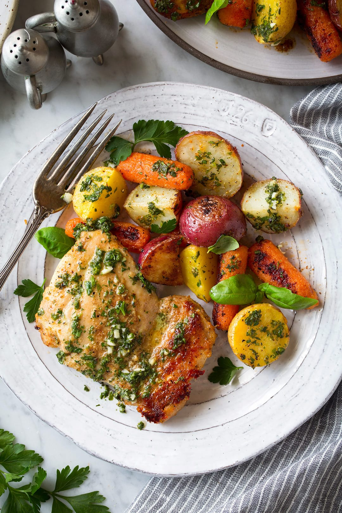

Lemon Garlic Chicken with Roasted Vegetables
This recipe provides a balanced meal with lean protein from the chicken and a variety of colorful vegetables that are rich in nutrients, vitamins, and antioxidants. You can adjust the recipe based on your taste preferences and add additional seasoning if desired.
Ingredients:- For the Lemon Garlic Chicken:
- 4 boneless, skinless chicken breasts
- 1/4 cup olive oil
- 1/4 cup fresh lemon juice
- 2 cloves garlic, minced
- 1 teaspoon dried oregano
- 1/2 teaspoon salt
- 1/4 teaspoon black pepper
- For the Roasted Vegetables:
- 2 large sweet potatoes, peeled and cut into 1-inch cubes
- 1 large red onion, chopped
- 1 red bell pepper, chopped
- 1 green bell pepper, chopped
- 2 tablespoons olive oil
- 1 teaspoon dried thyme
- 1/2 teaspoon salt
- 1/4 teaspoon black pepper
- Instructions:
- Preheat the oven to 400°F.
- In a large bowl, whisk together the olive oil, lemon juice, garlic, oregano, salt, and black pepper. Add the chicken breasts and toss to coat.
- Place the chicken breasts in a large baking dish and bake for 25-30 minutes, or until the chicken is cooked through.
- While the chicken is cooking, prepare the roasted vegetables. In a large bowl, toss the sweet potatoes, red onion, red bell pepper, and green bell pepper with olive oil, thyme, salt, and black pepper.
- Spread the vegetables in a single layer on a baking sheet and roast for 20-25 minutes, or until the vegetables are tender and lightly browned.
- Once the chicken and vegetables are done, divide them into individual meal prep containers. Allow them to cool, then store in the refrigerator for up to 4 days.